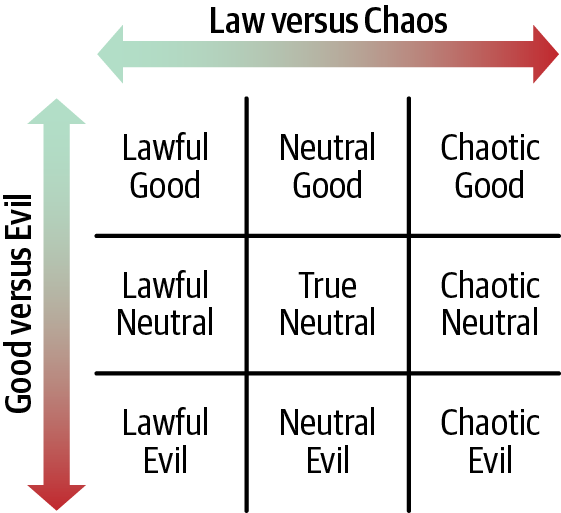
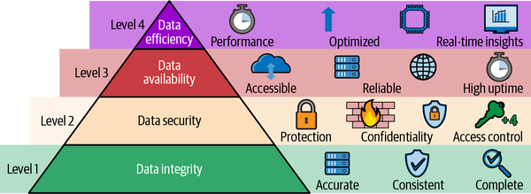
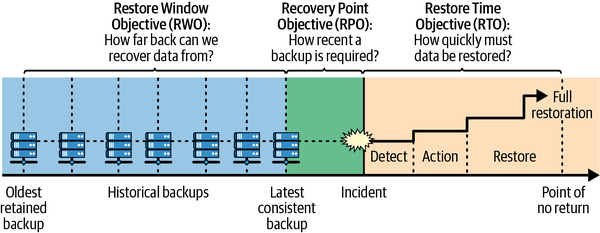
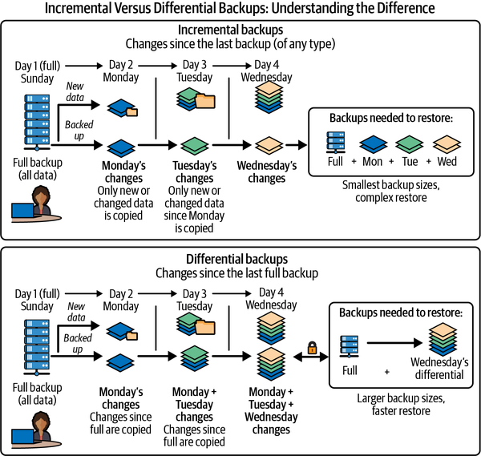

数据管理，是以合乎道德与法律的方式管理用户和公司托付给你的数据，同时帮助公司向用户提供服务并创造价值。数据是公司最宝贵的资产之一，必须得到应有的保护与尊重。
许多公司直到出事后才认真考虑数据管理；这就像马已经逃走才关上马厩门，为时已晚。数据管理故障与其他故障有本质区别，因为补救极其困难，而且往往不可能：没有有效备份，数据丢失就是永久性的；数据一旦被窃取，安全泄露也无法撤销。数据丢失或安全泄露对信任和声誉造成的损害可能极其巨大，即使有可能恢复，也需要数年时间才能恢复。现实中数据管理不善的例子不胜枚举，因此我们换个角度，看看一家处理得极其出色的公司。“9·11”事件中，怡安位于世贸中心的办公室被毁，但凭借完善的数据管理计划，公司在数小时内便恢复运营，且没有丢失任何数据。
本章详细介绍了如何利用 Google SRE 的实际洞察来构建强大的数据策略。人们很容易直接跳入技术领域，但数据管理必须始终首先满足业务和法律需求。我们将讨论的主题包括：
使数据管理与组织和法律要求保持一致
对数据进行分类以应用正确的管理策略
保障数据完整可靠，并防范各种威胁
识别风险以及用于缓解风险的工程技术
定义衡量成功所需的核心 SRE 指标
利用复制、备份和恢复来保持数据可访问
制定可行的备份计划、数据恢复流程和恢复策略，同时保持低成本
本章作者是负责运行 Bigtable 的 SRE。Bigtable 是 Google 最大的基础设施服务之一，存储着 10 EB（艾字节）数据，每秒处理 70 亿次查询。我们将在讨论数据管理的各个方面时穿插介绍 Bigtable。
在处理数据的时候，我们首先需要考虑业务， 法律和伦理要求。明确这些要求之后，才能决定采用何种技术方案。其中一些担忧取决于 行业、国家和全球区域。有些担忧取决于 数据的敏感性 - 例如，是否包含个人身份信息 (PII)。另一些问题，尤其是伦理考量（请参阅 “道德考虑因素”），直接受到贵公司的价值观和 文化。
我们不是律师。因此，我们不会尝试向您提供任何法律建议， 我们唯一的建议是：查明数据来源地、实际存储地和处理地（这三者往往不同）各自适用的法律要求，并确保遵守。你的组织应聘请熟悉这一领域的法律顾问。我们将提供一些简短的指导 说明本节值得考虑的事项，但绝不能将其视为完整清单。
许多司法管辖区都有关于数据保留的法律，例如不存储 处理后的数据，或确保完全删除数据 在用户请求您删除后的有限时间内 它。你必须清楚了解各层的数据处理和存储方式，才能为删除操作预留充足时间。 完全删除包括备份过期，这可能会限制备份的最长保留期限。您还需要监控数据的年龄 以及每一层的删除进度以检测违规行为，以及 并安排工程资源调查、修复造成违规的原因。您甚至可能需要对您的产品进行更改才能完全 符合数据保留法规。例如，如果您的产品 具有共享功能并支持再次共享，当用户删除已共享的数据时，您的产品是否也会删除转发的数据？你应该 请咨询您的法律团队是否需要这样做，因为这可能取决于法律管辖区。审计可以是 昂贵，特别是对于小公司来说，所以重要的是 设计您的系统和流程以向审核员证明合规性 尽可能简便、低成本。
一些有用的技术包括：
根据您的要求和数据保留策略，您可能希望支持两种删除选项。通过软删除，已删除的项目将被标记为已删除，以便在搜索中不再返回它，但它仍然物理存在于数据库或存储系统中。这使得在必要时恢复该项目变得更加容易。通过硬删除，与已删除项目关联的所有数据都将从存储系统中永久删除，从而无法恢复。
某些存储系统支持在创建或更新单个数据对象时设置 TTL，使系统能够 当 TTL 过期时自动清理它们。 理想情况下，存储系统会将其实现为软删除，以便以后可以在必要时恢复该项目。确保您知道如何清除或 更改 TTL 以防止删除 TTL 不正确的数据。拥有一种完全禁用 TTL 删除的机制也是一个好主意。您将需要衡量删除的及时性以及它们对您的服务的影响，即您的应用程序是否依赖于这些数据？
您可能熟悉的一项相关法规是欧盟的《通用数据保护条例》(GDPR)，该条例旨在让个人更好地控制其个人数据的使用方式。 GDPR 制定了管理组织如何收集、处理、存储和共享这些数据的详细规则。不遵守规定可能会导致巨额罚款（最高可达 2000 万欧元或组织全球年收入的 4%，以较高者为准）以及声誉受损。
许多司法管辖区都有关于数据驻留的法律。你需要考虑 数据来自何处、在哪里存储和处理，以及紧急情况下如何处置。 Google Cloud 有一项“飓风政策”来确保 它不会违反以下数据的数据驻留承诺 客户已表示受数据驻留法的约束。它指示 SRE 在处理区域限制数据时，不得 尝试移动它，因为这样做可能会违反某些客户的法律。这些客户宁愿丢失不可恢复的数据也不愿破坏数据 法律规定，因此我们在这些合规条件下接受数据丢失。 但是，对于不受数据驻留要求约束的数据，我们当然会这样做 如果需要保证其安全，我们将尽最大努力移动它。参见 “数据安全” 了解更多原因 保护数据是数据管理的一个重要方面。
例如，一些数字化程度较高的国家有规则限制 敏感的政府数据不得跨越国境。来自 从基础设施的角度来看，过去十年，数字主权已成为关注重点。在欧洲，多个国家（例如法国、德国、 和意大利）已开始运营主权云，由所在国家控制，而不是由超大规模云服务商自行控制。目标是 减轻与数据治理和控制相关的地缘政治风险。
许多司法管辖区对将用户数据用于不同用途有限制 其目的并非最初收集的目的。如果你 拥有彼此截然不同的产品，您需要 将他们的数据分开保存并记录获取数据的目的。 根据数据的结构方式，可能需要重组 和分离，或者应用程序可能需要从直接数据迁移 通过代理进行访问，该代理可以做出以下策略决策： 是否应允许访问。 Google 的云和内部 存储和数据库系统具有复杂的基于策略的控制 决定是否授权访问。这些策略由用户定义，因为用户最了解自己存储的数据。
欧盟《数字市场法》 (DMA) 的一项规定限制公司的不同部门是否可以 允许共享数据。 YouTube Music 用户提供 他们的音乐偏好以获得更好的推荐，但那些 除非用户明确表示，Google Ads 不会使用偏好设置 给予许可。同样，美国《健康保险流通与责任法案》 (HIPAA) 限制访问 患者数据，除非得到患者授权。
你或许听说过 龙与地下城 角色阵营（请参阅 图 16-1 ），这个想法已成为流行的九宫格风格的网络迷因 。这一概念沿两个轴划分角色的道德立场：善与恶，守序与混乱。因此，例如，有可能 一个从不违法的角色，可能属于守序善良、守序中立或守序邪恶 ：
守序善良的角色不仅遵守法律，还会作出无私的决定，并愿意牺牲自己来帮助他人。
守序中立的角色不会主动剥削他人，但也不会为帮助他人而牺牲自己。
守序邪恶的角色遵守法律，但总是会做出 选择让自己获益，而不顾他人付出的代价。

应努力做到守序善良，绝不要成为守序邪恶。对于受托管理的数据，有些用途可能合法，却不合乎伦理。如果用户没有明确要求某项操作，而你认为这样做对他们有益，风险就会出现——不妨先征求用户意见。如果你所做的事情用户并未要求，而且只对你有利，请想想用户得知自己的数据被这样使用时会作何反应。这些情况导致了 负面报道、用户信任流失和品牌声誉受损。
数据的重要程度差异很大，从相对无关紧要的信息到高度敏感的信息，例如财务记录或病史。数据价值决定了你应当以多谨慎的方式处理它；失去某人在游戏中的高分所造成的损害远远小于失去其财务数据，后者可能会在现实世界中产生严重的后果。虽然一条数据的真实价值只能是 由其所有者确定，可以做出一些合理的概括： 例如，财务数据、电子邮件和照片本质上都是有价值的。如有疑问，在完成正确分类之前，应先按高价值数据对待。
您负责的数据可以按照多个独立的维度进行分类，每个维度都会对其管理方式产生影响。从业务角度看，不同种类的数据有不同的 要求。公司应针对每类数据考虑以下问题：
数据应该保存多长时间？
谁可以访问它？
您的备份策略应该是什么？ （备份、快照、复制、 本章后面将详细介绍更多内容。）
发生事故时，恢复数据的响应流程是什么？
让我们看一下其中一些分类。这不是一个 详尽的清单；它的目的是让你思考数据 分类问题。
派生数据是通过某种转换过程从原始数据生成的数据。这类似于二进制文件和源代码：源代码是 您的原始数据，而二进制文件则源自源代码。 原始数据比衍生数据需要更高的处理标准 因为一旦丢失就无法恢复。源代码就是典型例子；照片、用户评论、电子邮件以及一般任何类型的内容也是如此 用户生成的内容。综合评分和建议 只要保留作为输入的用户评论，就能重新生成这些结果。备份对于原始数据尤为重要 （请参阅 “备份和恢复”）。
某些派生数据在技术上可以重新生成，但成本极高，因此需要类似地对待 原始数据。 Google 搜索索引为例：原始数据 可用（并且索引始终被刷新），因此索引 可以从中重新创建。但是，重新创建索引需要 大量的时间和资源，并且 Google 搜索将不可用 一段时间，因此索引会受到与索引相同的对待 原始数据。
可识别数据是可以链接回特定的任何数据 个人、企业、组织或其他实体。不可识别的数据是 已匿名化的可识别数据。通常可识别的数据 对其管理方式有更严格的法律要求 不可识别的数据。正确地进行匿名化是极其困难的， 以及仅对标识符做哈希处理或直接删除标识符，都不足以实现匿名化。哈希标识符仍然可以链接 跨数据块，并且删除标识符的数据通常可以 通过将其与其他数据源连接来去匿名化。Google 内部遵循的一条总体准则是“一段数据必须被概括 跨多个数据主体被视为匿名。”谷歌 提供了一个公共 指南，介绍数据匿名化方法。
某些个人数据本质上对用户来说比其他数据更有价值 个人数据。常见例子包括：
密码、私钥和口令短语
出生日期、家庭住址和政府标识符（社会安全号码、纳税人识别号码等）
敏感的个人信息，例如种族、性取向、 宗教信仰和性别
在收集高价值的个人信息之前，问问自己是否 你绝对需要它。你有明确的理由吗 收集敏感用户数据？想象一下，如果这些数据被盗、泄露， 或出售。您将如何向用户解释您收集数据的决定以及 用于存储它的架构？更重要的是，您将如何向您的法律顾问解释？遗憾的是，数据泄露既常见又代价高昂。 1
如果您确信自己有充分的理由获得并 存储此信息，您应该寻求法律建议以了解 有关管理数据的法律要求。一些公司有 专门的隐私专家。如果您有的话，请咨询 他们进行隐私审查。持有这些信息的商业价值，未必足以抵消相应的业务和法律风险。
如果您的公司已经拥有敏感或高价值数据，请务必请求 在将其应用于新用例之前进行法律审查。考虑是否存在风险 企业和用户能否从中受益，用户是否同意 他们的信息的用途，以及您所做的处理是否符合要求的标准。
此处危机四伏，务必格外谨慎。
现在您已经考虑了法律和道德因素并且 对您的数据进行分类后，您就可以管理该数据了。
Google 存储团队的座右铭是“你，而且只有你，始终能够读取自己的数据。”这句简洁的格言包含许多含义。简而言之：
“你，只有你”是数据安全方面（参见“数据安全”）。您的数据必须只能由您和你明确选择与之共享数据的人访问。
“……可以随时读取您的数据”涵盖两个方面：数据完整性 （参见 “数据完整性”）和数据可用性 （参见 “数据可用性”）。您的数据不得以任何方式损坏；它必须完全按照所写内容返还给您。当你需要访问数据时，它也必须可用。
尽管这句格言并不直接涵盖数据效率（请参阅 “数据效率”），但 Google 的存储产品还要确保你能以合理成本访问数据，因为过高的访问成本会妨碍实际使用。
这四个元素形成了数据需求层次结构，以 马斯洛著名的需求层次结构 为模型（ 图 16-2 ）。

我们金字塔的第一层是数据完整性：基本保证检索到的信息与原始信息完全匹配 写入，确保数据不会随着时间的推移而损坏或丢失。 常概括为“读到的正是写入的”这一原则，它是衡量准确性和 服务所用数据存储的准确性和可访问性。维持 根据这个标准，一个强大的数据管理策略必须协调多个 不同技术机制：
通过存储冗余和容错实现数据弹性 在硬件故障中幸存下来
通过校验和主动检测静默数据损坏 (SDC)
适当的实施选择，例如仅附加日志和多版本并发控制 (MVCC)，以最大限度地降低损坏风险
识别和修复逻辑不一致的验证过程
这些互连的组件共同确保用户数据的保存 在整个生命周期中可信且一致。
为了防止数据完整性故障，Google 在以下位置使用校验和： 多层：应用层，下面的每个存储层， 中间的 RPC 层覆盖传输中的数据。计算和 验证所有这些校验和的成本很高，但这就是我们识别的方式 当数据损坏时。
静默数据损坏 (SDC) 是一个大规模问题：硬件故障 可能会导致 RAM 中的位翻转或 CPU 上的错误计算，从而损坏 数据。尽管这些硬件故障很少见，但规模足够大 它们将会发生。尽早发现 SDC 至关重要，越早发现，补救成功的机会越大。如果 RPC 可能失败 因为检测到 SDC，发送方有机会重试该操作；然而，如果数小时或数天后检测到 SDC，则数据更有可能 无法恢复。
Bigtable 是其中之一 Google 最大的基础设施服务，因此它对 SDC 进行了大量投资 预防和检测，校验和是主要技术。校验和的广泛使用降低了 SDC 的速率 Bigtable 到大约一个小事件（例如，单个不可恢复的文件） 每年影响少量 tablet（Bigtable 分片））。我们有一个数据恢复策略（请参阅 “创建数据恢复策略”）和用于这些事件的数据恢复工具。
应用程序级验证对于检测非常有帮助 导致存储的数据不一致的应用程序级错误。不一致可以通过多种方式引入。这是一个 需要考虑的部分列表：
需要保留的一项数据有两个真实来源 同步，其中任何一个都不能从另一个派生
出于性能原因已非规范化的数据
独立进程并发处理同一份数据时的竞态条件
跨多个数据源的更新无法封装在单个数据源中 事务
任务在更新过程中崩溃
根据尚未完全复制的更新做出的决策
有时，这些不一致和由此产生的协调是 由于工程权衡，例如，排队更新 稍后启动而不是阻止应用完整更新 用户请求它。我们区分 协调 和 修复 以区分预期的不一致和意外的不一致 不一致。预期的不一致是系统设计的一部分， 而意外的不一致是应该修复的错误。
理想情况下，意外不一致的修复过程应该捕获 足够的调试信息使应用程序开发人员能够 调试、重现并修复错误。默默修复意外 不一致可能会长期隐藏错误，有时 不一致可能会累积到无法修复的程度。维修 应记录和监控操作，并在维修次数超过某个阈值（由业务决定）时触发警报。在 在某些情况下，该阈值是 1，因为任何修复都表明存在严重的问题 问题。在其他情况下，低背景水平的修复可能是可以接受的，如果数量增加，则会触发警报，表明可能已经出现了新的错误 介绍了。
考虑 Google Play 处理用户之间迁移的架构 家庭团体。因为跨群体迁移是一种罕见的变化 影响多个下游服务，平台记录变化 并异步应用它而不是同步执行它。如果 单个依赖项更新失败，下次运行协调 管道自动捕获并应用错过的状态更改。这种短暂延迟是可接受的、受到良好监控的工程权衡 尽量缩小整个系统的影响范围。
正如 图 16-2 所示，金字塔的下一层是数据安全。与数据完整性一样，它 是一个基本问题。用户非常关心他们的数据不被泄露 可供他们未同意访问的人员或进程访问 它。 （参见 思科 2024 消费者隐私调查 ，75% 的受访者表示“我不会 从我不信任我的数据的组织购买。”）。这包括 为用户提供服务的公司员工以及 公司使用的底层基础设施提供商。应尽一切努力减少和限制对用户数据的访问。哪里 对数据的特殊访问至关重要——例如，调试一个服务器 当它尝试加载数据时崩溃——授予的访问权限应该是 尽可能受到限制（例如，访问单个帐户而不是 所有帐户，并且仅限于所需的时间 调查）。应记录所有异常访问以供将来使用 分析，理想情况下是一个不受控制的系统 访问用户数据的人员，并且无法绕过日志记录。
对于您存储的每种类型的数据，您应该询问谁可以访问 这些数据以及持续多长时间。管理访问的核心安全原则 是最少访问原则 (PoLA)，授予每个用户、服务和 系统访问最少数据所需的最低权限 需要。如果您将数据存储在云提供商中，客户管理的加密密钥可让您确保云提供商 无法访问您的数据。如果您想保护您的数据免受单一 尝试恶意行为的实体（或者只是普通的人为错误），您 可以实行多方审批，让第二双眼睛 验证该操作不会导致不必要的后果。 不同的数据或操作可能有不同的要求；例如， 人们的名字可能被广泛使用，但地址却被严格保存 严格限制。
您可能已经看到过数据分类，例如 机密 ， 仅限内部 、 公共 、 PII 等。您不会想要您公司的 网站显示仅供内部使用的数据，您可能不会 希望机密信息在各部门之间共享以供法律使用 原因。对数据进行分类并制定数据规则 访问对于确保您打算共享的数据不被泄露非常重要 在非预期平台上或与非预期各方共享。
工程师需要数据进行测试，最简单的选择通常是使用生产数据进行测试。人们通常开始测试
与生产数据，因为他们的实时数据集很小而且很容易
管理。在快节奏的初创公司中，他们可能认为没有时间
创建测试数据并使其保持最新。虽然这是
可以理解，从长远来看这是不可接受或不可持续的：
在某种程度上，需要投入大量精力来创建测试
数据和测试环境。 2 此外，必须设置文化期望来维护测试数据
通过更改并创建新的测试数据作为重要组成部分
构建新功能。否则，工程师会保留太多的访问权限
到用户数据，并且一次误操作就可能执行 delete from ... 之类的命令。遗憾的是，有许多因以下原因导致数据丢失的例子：
工程师错误地针对生产运行测试代码或命令。
在 Google，数据由专门的存储和数据库团队管理。 这些团队拥有完全独立的测试实例，通常称为 “crash”实例（这让您了解预期的稳定性和可靠性），以便工程师 进行实验。那里不存储任何重要数据。在最坏的情况下 在这种情况下，必要时可以直接丢弃实例并从头重建不会对用户数据产生任何影响，并且大多数崩溃单元都是 定期清空。大多数存储和数据库系统还提供 共享沙箱式实例供用户试验。命名 故意与标准生产实例有很大不同，因此 用户不会感到困惑。
一旦我们确保了数据的完整性并确保其安全，我们就可以 继续前进到金字塔的第三层。用户期望他们的数据是 当他们想要访问它时可用。可用性是保证 用户可以在需要时访问他们的数据，定义为 根据业务量身定制的特定正常运行时间和延迟 SLO 核心工作流程。从 SRE 角度，实现高可用 需要复制、容量配置和 维护——这确保了用户体验不会受到严重影响 运维停机期间出现长时间性能劣化。
您可能不知道您存储的数据是如何使用的。对于 例如，Google Cloud Storage 中的数据可能是很少访问的归档数据，也可能是高流量网站使用的静态内容。 访问频率是评估影响的一个糟糕指标 不可用，毫无疑问，您可以轻松想象这样的场景： 很少访问的数据的不可用性影响非常大。所以，对于 每个客户和每个数据分类，您必须确定 您的延迟和可用性要求。
不同的公司需要不同的核心可用性 工作流程。金融公司通常优先考虑一致性，因为 交易必须始终以正确的顺序记录：丢失 提款或存款会导致监管问题和客户更换银行。电子商务优先考虑可用性 和延迟，因为如果店面没有启动，用户就无法购买您的产品 产品并可能从竞争对手那里购买，导致您损失 收入。
工作负载之间的延迟要求差异很大，并且不同的 公司内的工作流程可能有非常不同的需求。如果你是 运行需要完成分析数据处理的 cron 作业 财务台的每日报告，您可以容忍 延迟时间约为数小时。然而，面向用户的系统，例如 支付处理器需要亚秒级延迟，以便客户可以 进行购买。 3 缓存和地理等架构策略 冗余可以降低总体负载和网络成本，并且它们应该 在规划数据存储位置时要考虑。因为面向用户 交易必须高性能，必须严格 经过测试和监控，以确保它们保持快速。从应用程序或 从用户的角度来看，请求超时相当于数据被丢失 短时间内不可用，因此考虑延迟很重要 同时考虑可用性。
多种技术可以提高可用性，包括：
复制或冗余以提供额外的副本以供读取。一个 简单的系统设计会将作业静态分配给不同的副本。 更复杂的系统将在副本之间动态地进行负载平衡。
进行配置，以便高峰使用不会使您的存储系统超载。
设计允许副本支持常规软件或 硬件维护而不影响数据可用性。你不 想要同时使同一份数据的所有副本离线 时间。
了解您的数据和业务需求后，您可以选择 基于该信息的存储解决方案。您需要围绕这两个方面制定 SLO 可用性和持久性；有关更多详细信息，请参阅 “SLO” 。
我们已经介绍了数据需求层次结构的前三层，我们正处于最后一站：数据效率。如果您存储了您的 一个区域中每台机器上的整个数据集，客户端从中读取 多个来源以实现高可用性和低延迟，您将拥有 高性能且有弹性的存储系统。然而，这将是 昂贵得令人望而却步，并且写入延迟会随着 机器数量。在存储系统上投入资金可能看起来像是 使其具有弹性和快速的最简单方法，但这种方式无法规模化持续发展。您工作的一部分是在提供弹性和性能的同时高效存储数据，平衡速度、成本和质量。这个 并不容易；它将涉及有趣的工程工作，包括 决定购买什么硬件和软件，并选择 根据您的具体需求进行正确的权衡。
Google 内部的一位大型存储用户已不再复制所有数据 跨多个区域实现类似于独立磁盘冗余阵列 (RAID) 配置的功能 地区。每个区域存储数据的子集，就像计算机中的硬盘一样 RAID 阵列存储数据的子集。这些子集经过分布式安排 这样任何单个区域的丢失都可以恢复，就像任何单个区域的丢失一样 RAID 阵列中的硬盘。而不是存储 数据的两个副本（100％开销），它存储一半的数据 一个区域，一半在第二个区域，代码块大小等于 第三个区域的一半数据（50% 开销），降低存储成本 25%。各区域的数据存储层存储在 巨像， 它同样在多台机器上使用类似 RAID 的编码。
用户通常不会原谅数据管理中的失败。企业客户通常比个人用户更不宽容，并且经常会选择寻找 如果故障发生得太频繁或足够严重，则更换供应商。 失败会导致负面报道、用户信任流失和收入损失——有时如果违反 SLA，则必须支付赔偿。
在不考虑故障场景的情况下实施备份 希望从中恢复的故障场景，就会导致覆盖不完整或不必要的 费用。这是一个必然不完整的场景列表 考虑。
人类操作员、配置管理系统和自主 AI 智能体本质上都是容易出错的，并且会犯错误。人类也可能故意和恶意删除数据。你的 防御此问题的选项有：
配置快照、备份或两者。从快照或备份恢复时，最后一个已知的良好恢复点（可能难以识别）和操作员错误或恶意操作发生的时间之间进行的任何写入都可能会被删除。 丢失了。快照与实时数据共享命运，因此影响实时数据的事件也可能会影响快照。备份是数据的单独副本，因此受到影响的可能性较小。
最大限度地减少人为访问您的数据，特别是单方面的人为访问，以降低操作员错误或恶意操作的风险。
快照和备份将在 “备份和恢复” 中详细讨论。快速总结是 快照是仅元数据操作，添加额外的引用 底层数据，固定底层数据并防止其被 被覆盖或垃圾收集。相反，备份是完全 底层元数据和数据的单独副本。
存储系统中的错误不太可能但有可能破坏 您的数据，无论是在静态还是在写入期间（例如，删除表或 写入部分数据）。硬件故障多久会导致损坏？对 Facebook 的 RocksDB 键值存储引擎进行的研究表明，每 100 PB 数据大约每三个月发生一次损坏。在其中 40% 的情况下，确定损坏已经传播到其他副本。 4
您可以选择以下防御措施：
配置快照、备份或两者。快照 与实时数据同命运，因此该bug可能会影响 实时数据也会影响快照。备份是单独的副本 数据，因此他们受到影响的可能性较小。
并行写入两个或多个存储系统。这些应该位于不同的故障域（例如区域）中，以尽量减少共享 其他失败场景的命运。
有关 SLO 的一般介绍，请参阅 第 8 章 。本节讨论与数据管理直接相关的 SLO。
设计数据存储系统时，必须考虑三个核心 目标：
从备份恢复时，可接受的数据最久能有多旧
允许的最长可接受时间 故障后完全恢复数据所允许的最长时间
您需要回溯多长时间 恢复您的数据
图 16-3 显示了各项目标在备份计划中的相对位置。

你将根据这些目标制定相应的 SLO，例如，“备份 99% 99% 的时间数据源都在 RPO 范围内。”不要落入陷阱 评估现有存储系统的功能，然后 设计和实施满足RPO、RTO和RWO的备份计划 根据您当前的限制，似乎可以实现的目标。相反， 应首先考虑您的 RPO、RTO 和 RWO，这些应该 推动备份策略的设计。在许多情况下，他们还会推动 设计和实施您的存储策略。
恢复时，数据最多可以有多旧？换句话说，你能承受丢失多少业务数据或用户数据？ RPO 定义备份之间的最大时间量， 以及您准备丢失多少数据。例如，对于 汇总其他来源数据的二级报告系统 24 小时 RPO 可能完全有效。对于银行应用程序， 目标可能是零秒，因为不会丢失任何数据 可以接受，即使该目标不能 100% 实现。
确定 RPO 将确定您需要进行备份的频率，这将 限制任何单个备份可以花费的时间。限制每次的持续时间 备份将限制您对备份系统的选择，并可能会导致 单个实例可存储数据量的上限。实例大小的上限可能需要您 对您的存储进行分片，这反过来可能需要进行大量更改 您的申请。您会明白为什么要尽早决定 RPO 至关重要——它会对你的许多其他部分产生重大影响 系统，并且会极大地限制您的实施选择。
您需要多快才能恢复数据？上限 可接受的恢复时间决定了您的 RTO。请注意，RTO 是 累积指标，包括检测时间、采取行动的时间以及 恢复所需时间。这最终是一个由以下因素驱动的商业决策： 业务需求。您的目标 RTO 也会限制您的实施 选择。例如，从备份恢复可能需要非常长的时间 时间，因此您可能需要使用快照或热备用。定义您的 RTO 将帮助您适当地配置硬件：您需要足够的备用硬件 RTO 内完全恢复的能力，如果您正在谈论 恢复 100 TB 的数据，需要大量的读取、写入和网络操作 带宽——您的系统有足够的带宽吗？
快照的恢复速度本质上比备份更快，因为它们 仅需要元数据更改而不是数据更改，但请注意 快照的共同命运方面：如果故障模式影响到两者 数据和您要从中恢复的快照，您的快照不是 完整恢复选项。在这种情况下，你也许可以 将绝大多数数据的快照恢复与目标数据相结合 备份恢复快照中损坏的数据。但是，您需要验证是否可以 充分识别损坏或丢失的数据，以便您的备份 系统支持恢复备份的子集，并且恢复 备份子集的运行速度始终比完整恢复快得多。情况并非如此，有几个原因，包括：
您需要恢复多久之前的数据？可供恢复的时间窗口长度决定了您的 RWO。数据丢失，特别是 数据损坏，经常未被发现，直到有人尝试并 无法读取数据。例如，如果您有每日政策 具只保留两个备份的备份，那么您将无法从中恢复 三天前发生的损坏。相反，保留政策为 14 天允许从该期间的任何一天恢复，但需要注意 长达 24 小时的数据可能会丢失。为什么是24小时？如果备份是 在午夜拍摄并在 23:50 写入损坏的数据，则 最后一次良好的备份几乎是 24 小时前的。
您的 RWO 必须足够长才能满足业务需求，同时 足够短以满足数据保留和删除 要求（参见 “法律与伦理考量”）并保持成本可接受。有些工作负载自然会读取所有内容 数据集中的数据并快速检测数据丢失或损坏。
数据复制是平衡成本的战略业务决策 它以成本换取更高的性能和可用性；通过让多个区域都能提供服务，系统可以在失去一个区域后继续运行。 但是，复制不能成为您唯一的恢复机制，因为 两种众所周知的故障模式：
如果损坏的数据写入主 例如，它立即复制到所有下游副本，不留下任何内容 恢复原始状态。
复制提供针对意外情况的零保护 人为错误、应用程序错误或恶意删除，因为删除 删除命令也会原样复制到各处。
要恢复，您需要一种方法将损坏的数据（部分）恢复到已知的良好状态，为此您需要快照或备份。如果 您正在对中间数据运行数据分析作业， 中间数据如果丢失可以重新生成，并且可能只需要一份副本。如果您要存储信用卡交易数据，您 出于监管和客户信任的原因，不能丢失这些数据。
如果选择使用复制，则需要考虑 RPO、RTO 和 RWO，如 “SLO” 中所述。确定 您的数据需要多少个副本只是第一步；你需要 考虑仍然满足业务需求的最大复制延迟。 同步复制使恢复更简单，但它增加了写入 延迟以确保一致性，并且还具有同步复制错误数据的缺点。异步复制的写入速度快，但复制延迟可能很长，尤其是 热点数据。这尤其适用于故障转移：如果您的复制是 五分钟后，触发故障转移实际上是在把系统硬生生恢复到五分钟前的状态。如果数据丢失不是 可以接受，你的副本提供了一种昂贵的虚假安全感，并且 你真的应该考虑一个高度一致的复制 策略。
对于大多数关键任务存储系统，行业标准已经 存储数据的三个副本，通常至少在 不同的数据中心，但最好位于不同的云区域，以便您 防范自然灾害、公用事业故障、地缘政治、 等如果其中一个数据中心离线，业务仍将继续 以接近零的 RPO 继续运行。
许多工作负载（例如在线购物）的读取次数远远多于写入次数。在这些情况下，只读副本是减少可写副本负载的有效方法。这些副本还可以部署在离用户更近的地方，这样只需将写入发送到另一个区域，而读取则在本地提供服务。
确保您彻底了解存储系统的详细信息 在部署之前根据每个额外的副本进行扩展，以确保您做到 在高速增长阶段不会出现意想不到的性能断崖。
评估存储平台需要分析其复制架构并观察其在实际生产工作负载下的行为方式。主要有两种配置：
最简单的复制模型， 具有一个主节点和多个从节点。由于所有写入操作通过单个领导者进行，系统强制执行 开箱即用的严格订购限制。
更灵活、更有弹性和可扩展的配置 多个主节点，可能与多个从节点配对。这个 该方法非常适合地理分布式部署，因为客户端可以直接写入其本地副本。
对于多领导者拓扑，必须有一个 解决冲突的方法来处理对不同的重叠写入 领导者。冲突的存在并不总是报告给写入方， 和“最后写入获胜”语义可能不适合您 应用程序。确保您和您的应用程序开发人员理解 冲突解决的语义。
另一个重要因素是你是否想要 同步或异步复制。同步复制很多 更容易推理，因为成功的写入将在 其他副本，但写入延迟较高。异步复制 提供更低的写入延迟，但代价是更困难 一致性模型，因为成功的写入可能不可见 立即到处。
对于异步复制，确定延迟的上限为 重要的是——满足您的最大复制延迟是多少 应用程序的需求，以及如何确保复制延迟 保持低于该限制？如果您的数据存储系统的领导者是经过分片，并且您的复制是异步的，您需要遥测不同从节点分片的复制延迟，因为 应用程序可能需要处理不同的复制 延迟取决于分片。
是否保证复制或尽力而为？在尽力而为的情况下， 您的系统尝试复制并放弃它（如果是） 不成功；因此，它可能是有损的。如果您在以下情况下操作 尽力而为语义，您将需要流程来处理不同的 副本。不同的副本很难检测并且极难发现 修复，特别是当分歧级联到 应用层。
副本丢失最终会发生，您需要为许多情况做好计划 这可以通过不同的方式发生。正如我们所见，有两种主要拓扑 考虑一下，单个单领导者和多领导者，我们可能会失去一个 任一拓扑中的从节点或领导者。 （像 Cassandra 这样的无领导拓扑 透明地处理副本丢失。）
如果单领导者拓扑中的从节点暂时不可用但会恢复，则可以等待 成为可行的策略。但是，您需要足够的存储空间 领导者存储需要复制的不断增长的积压数据， 当副本出现时，领导者将会承受很大的负载 返回。
如果您永久失去从节点，应该有一个 详细记录的更换过程。在许多系统中， 替换可以自动执行，但在启用此功能之前您需要考虑一些事项：
确保应用程序自动切换到新的从节点，并且 所有节点上都有足够的容量来处理一个副本 长时间下线。因为异步复制 可能会导致故障转移期间的数据间隙，请确保您的应用程序可以处理 跳过或延迟的数据。
如果你只有一个从节点（常见于领导者-从节点数据库 系统），对于从中读取数据的应用程序来说，切换到 领导者，或者他们应该等待新的从节点，以避免增加负载 领导者？确保领导者能够处理额外的流量。 SRE 应该 实施负载削减，以限制低优先级客户端 在这些高峰期。
另一方面，如果你失去了领导者，等待就不太可能成为一个问题。 可行的策略，因为无法执行写入操作。提升从节点 领导者应该是一个自动化的过程或一个记录完备且经过充分测试的人工流程。
如果复制是同步的，则不太可能丢失任何写入。但是，如果复制是异步的，则某些写入可能尚未复制。考虑以下几点：
在多领导者拓扑中与失去从节点相关的问题与在单领导者拓扑中相同。然而，当失去一位领导者时，情况就不同了。一般来说，更换领导者是 不那么紧急，因为剩余的领导者可以继续接受写入。 了解异步系统中写入是否丢失是 不过，可能会困难得多，因为复制延迟可能变化很大，而且您可能正在处理一个完全连接的图 N 节点。
如果写入仅传播到领导者的子集，则可能是 可以将这些写入恢复给没有这些写入的领导者。请注意因网络链路关闭等原因引起的脑裂情况，因为这可能需要手动确定应保留哪些写入。理想情况下，该软件将 提供工具来支持这一点，因为它很复杂；过程需要 写入给定副本，而不将该写入复制到所有其他副本 副本。
人们常常只关注备份而没有充分考虑 还原。人人都会在真正需要还原的那一天关心能否恢复数据和服务，但过程和结果往往未经测试。您需要找出合适的备份 安排和流程，确保您的备份不会与原始数据共担风险。
务必理解 快照与备份之间的区别 。许多存储和数据库系统提供 写时复制 快照 ，通常只需要更改元数据即可保留 某个时间点的数据。
然而，快照与其所对应的数据部分共担风险：如果活动文件因数据损坏而丢失，它也会丢失 在它存在的所有快照中。相反，快照仍然存在 不受其他一些类型的故障（例如应用程序错误）的影响 写入错误数据或操作员错误删除文件或目录。 由于快照生成非常便宜，因此团队可以频繁拍摄快照。它们作为保险特别有帮助 进行有风险的更改，因为您可以快速轻松地回滚到 你拍摄的快照。这仍然会涉及突变的丢失 拍摄快照后制作，但这比完全丢失要好 数据。
备份是数据的单独物理副本，而不是逻辑副本 快照。正确地说，他们根本不应该与 原始数据。有一个 然而，获取它们的成本很高：数据需要从 原始位置，通过网络传输，并写入 新地点。 （对于平衡备份成本的策略 恢复性能和可靠性，请参见 “完全、增量还是差分？” 。）
原始数据与备份之间隔离得越彻底越好：与原始数据在同一硬盘上的备份 如果您覆盖原始数据，它可以救您，但不会救您 硬盘故障。 “3-2-1”备份策略是 推荐：
维护数据的三个不同实例（一个主要实例） 生产数据副本和至少两个备份）。
将备份存储在两种不同的物理介质类型上 以防止系统硬件缺陷。
在异地或在某个地方至少保留一份备份副本 地理上不同的云服务，采用本地数据驻留和 考虑监管要求。
修改或删除备份所需的凭据应该高度 受到限制，理想情况下任何可以写入实时数据的东西都将具有 完全没有备份管理权限，以防止出现相同的错误或 恶意行为也会影响备份。
在实践中，最有效的灾难恢复策略通常将两种机制结合起来以获得各自的好处。 快照便宜且拍摄快捷，因此您可以拥有很多快照，并且 它们恢复速度很快，RTO 较短。备份的创建和恢复成本更高、速度更慢，但它们不像快照那样与原始数据共享命运。两者兼具，您可以选择快速恢复最近的 快照何时是对数据丢失的适当响应，或者何时 必要时，从不太可能有的备份中恢复 遭受同样的数据丢失。快照和备份的正确组合将 由您的 RPO、RTO 和 RWO 及其相关的 SLO 确定。
根据您要备份的系统，您可能可以选择 完整、增量或差异备份。让我们讨论每种方法的优缺点，以帮助您做出明智的决定 关于选择哪种方法。
使用增量方法，您定期进行一次完整备份，然后进行 N 增量备份 备份，每个备份仅包含自此以来的更改 以前的完整或增量备份。这在概念上类似于 版本控制，从一个空文件开始并提交差异 版本之间。
优点：
这是开销最低的备份选项，因为您只需备份 自上次备份以来发生的变化。它需要更少的存储、更少的 I/O、更少 网络，以及更少的计算——但前提是有一种有效的方法 确定需要备份的更改（参见缺点）。
增量备份速度更快（在初始备份之后），因此 您可以更频繁地使用它们，从而实现更新的 RPO。
缺点：
恢复更加困难和缓慢，因为您需要最近一次完整备份加上此后的所有增量备份。
增量备份的丢失或损坏会影响后续的每个备份 备份直到下一次完整备份。
并非所有系统都有有效的方法来识别发生的变化 需要备份。例如，增量备份在 Unix 上运行良好 文件系统，其中上次修改时间告诉您文件是否需要 进行备份。它们在传统数据库上的工作效果不太好，在传统数据库中 没有本地时间戳来识别需要修改的行 备份。
尽管增量备份速度快且成本低，但您需要 为定期全备份提供足够的资源，包括 足够的目标存储用于一次完整备份、所有增量备份 备份，加上新的完整 备份 — 或 更多，具体取决于您的 RPO。
通过这种方法，您可以定期进行一次完整备份，然后进行每个后续备份 差异备份包含自上次以来发生更改的所有内容 完整备份。 图 16-4 将此与增量方法进行了比较。

优点：
与完整备份相比，计算、网络和存储开销更低。
恢复只需要完整备份加一份差异备份， 使它们比增量方法更简单、更便宜，并降低共担风险。差异备份的丢失仅影响您的恢复能力 那个备份；它不会影响您从以后恢复的能力 备份。
您可以比完整备份更频繁地进行差异备份。
缺点：
另一个考虑因素是您是否应该选择进行简单的备份 更可靠但更昂贵或智能备份 这可能不太可靠但更便宜。
智能备份可以尽量缩短数据摄取窗口并降低存储开销。然而， 它们的可靠性可能较低，因为备份越智能，就越可靠 出错的可能性就越大，备份就越有可能 无法恢复的。此外，备份越智能，支持的功能就越多 恢复时也有更多环节必须正确运作，即使备份本身生成无误。
比较备份 SQL 数据库的两种方法：复制原始数据库 文件与通过导出整个表 SQL 查询。前者更聪明，因为不会让数据库出现负载尖峰，并且不需要中间存储 备份。然而，后者更容易推理，因为在数据库写入文件时不存在通过读取文件来备份不一致数据的风险。缺点是数据库负载显着增加。
对于恢复来说，复制方法有更多潜在的故障模式 因为如果数据库文件损坏，您可能会丢失 整个备份。另一种可能的故障模式是它们只能工作 使用相同的数据库软件，甚至可能只是相同的 该数据库的版本。从 SQL 导出文件还原更加可靠，因为如果备份出现问题，您可以尝试 编辑它，将其分割成块，或将其恢复到不同的数据库 如果需要的话软件。
当您设计备份时，可能会很想使用 尖端的新功能 - 但重要的是要考虑新功能 它带来的故障模式以及如何或是否可以从这些故障中恢复 失效模式。我们并不是说永远不要使用该新功能，而是说您 应给予适当的考虑并经常进行测试。
很多时候，团队不会测试恢复，只是在恢复过程中发现 危机发生时，才发现还原路径已损坏，基础设施 资源不足，或者运营出现偏差 历史程序已过时。解决方案是在 定期进行，理想情况下使用自动化测试而不是手动测试， 人工还原的理想状态，应当只是用不同参数运行自动还原流程。这可能需要额外的 机器资源，但如果您没有资源进行测试 恢复，您有资源进行真正的恢复吗？对备份进行分片将减少测试所需的资源并提供 如果他们曾经恢复过，恢复的额外好处会更快 真正需要的。自动恢复测试，并进行适当的监控和 警报，将有助于确保您能够满足 RTO 并及时发现 回归（参见 第 14 章 ）。
您需要考虑不同类型的恢复并确保您的 恢复过程和测试涵盖每种类型。例如：
作为正常业务运营的一部分进行恢复，例如恢复 每晚备份到单独的实例以运行报告生成 这样负载就不会影响服务用户请求
用户请求的部分恢复 — 例如， 我删除了所有 电子邮件；你能帮我把它拿回来吗？
部分或完全恢复以响应应用程序写入错误 数据
部分或完全恢复以响应硬件故障，范围 从单个坏硬盘到数据中心丢失。
除了自动恢复之外，还需要手动操作来启动 恢复必须被记录、测试并实践到相同的水平 当您练习其他事件响应时。恢复测试是备份计划的重要组成部分（在 下一节）。
让我们想象一下备份 YouTube 的假设策略：
生成所有视频的列表。
复制包含视频的文件。
复制所有视频元数据。
虽然这看起来合乎逻辑，但存在固有的竞争条件。在步骤 1 和 3 之间上传的任何视频都将备份其元数据，但不会备份视频文件本身，因为它们不会包含在要复制的视频文件列表中。换句话说，如果我们恢复此备份，某些视频将具有元数据，但不会有可播放的备份文件。这里的错误是所有 元数据被备份，而不是被过滤以匹配 正在备份的视频文件。
有有两种方法可以发现此类错误，并且都是 重要。第一个解决方案是人工分析，寻找系统中的缺陷 设计缺陷并加以修正。 Google SRE 为此采用了 STPA（如 第 12 章 中所述）。第二个解决方案是让 应用程序验证恢复的数据并标记差异以供调查，并将应用程序级验证包含在您的 自动恢复测试。在 YouTube 示例中，一个过程 验证视频元数据和支持视频文件将很有用 无论如何。将其连接起来以运行测试恢复不需要太多努力，但会带来显着的好处。 这种类型的应用程序级验证不仅有助于改进备份和恢复 流程，还能发现改进 应用程序本身减少内部不一致（甚至是暂时的） 的）。
许多人临时设置备份而不是计划 他们。虽然这比根本没有备份要好，但采用临时方法很容易导致备份覆盖范围出现空白，例如，您可能会丢失一个备份 某个数据集，或虽然有快照却没有离线备份。适当的 规划可以帮助您避免这些差距。它还有助于确保您不会进行太多备份，无论是通过 备份到多个系统，而无需从中获得额外的好处 额外的备份、备份过于频繁或保留备份 太长了（根据你的业务需求，一年前的备份 可能没用）。正确的备份规划将有所帮助 保持备份高效并正确配置。本节提供有关如何编写备份计划以及 以及若干实施建议。
为了避免繁琐的重复，在本节中，我们使用备份作为统称 物理备份、快照、PITR、复制和其他恢复机制 本章中进行了描述。
您的工作是设计和实施满足以下要求的备份策略 业务需求并有助于实现业务连续性目标。备份策略不足会使业务面临风险。过度 频繁的备份对于企业来说是不必要的开支。备份 保留时间过长可能会产生法律风险。一些 如果可行的话，数据应无限期保留——例如源代码或法律 文件。有些数据是不可替代的，有些可以轻易重新生成，而且大多数都介于两者之间。你需要平衡所有 这些相互竞争的要求并定期检查您的备份策略 以确保其保持相关性。
实施备份的最简单策略是应用 一刀切的方法，但这几乎总是会导致一些 以错误的频率或不合适的方式备份数据源。在光谱的另一端是完全 为每个数据源自定义备份配置，如果您只有几个数据源，这很好，但很快就会变得难以（或不可能）管理。 中间的某个地方是最佳点，通常也是实现这一目标的最佳方法 就是将你的数据源分类到不同的类别中并使用相同的 同一存储类别中每个数据源的备份配置。
为了帮助您确定您的存储类别应该是什么，我们建议构建数据源目录。这样一个 目录还有更多用途，例如合规性审计，并且可能由于其他原因已经存在。与数据分类有一些重叠（请参阅 “数据分类”），因此从它开始通常会有所帮助。定义 首先将数据集分类到类别中可能不会产生最佳分类；更有用的方法是分组 将相似的数据放在一起，然后为其确定适当的分类。一旦你 拥有目录，根据您的业务需求为每个数据源提供一些标签。示例可能包括 用户提供的 、 频繁更新的 、 派生的 、 法律敏感， 个人可识别的和低值。 （低价值？认真的？是的，你的一些 与其他数据相比，数据相对价值确实可能较低，而且 在创建备份计划时值得考虑这一点。）然后您可以使用 这些标签对数据源分类别。取决于有多少 导致的存储类别，您可能需要组合存储类别以保持 数量可管理。
现在您有了存储类别，您需要为每个存储类别设置 RPO、RTO 和 RWO 类别；这些决定了备份配置的目的。这些 例如，两个要求将导致截然不同的备份配置：
我们可以容忍长达 24 小时的数据丢失，业务将 如果我们能在 12 小时内恢复就好了。
我们不能容忍超过 5 分钟的数据丢失，因为我们会进行缓冲 10 分钟的数据用于重放，我们需要在 3 分钟内恢复 分钟，以便我们有 2 分钟的时间来重播缓冲区之前 内容开始被丢弃。
还应该清楚您在每种情况下的反应方式 会有很大不同：第一个手动响应就可以了，但是 第二种情况则必须由软件自动发起并推进响应，因为人工响应不够快，无法避免数据丢失。
请记住，某些数据不应备份（业务价值可能太低而无法证明备份的合理性，或者重新生成数据可能比备份数据更便宜），并确保您对没有备份的数据有明确的 SLO。
“备份和恢复” 中的讨论可以帮助指导您 备份配置决策。关键决策包括：
快照创建速度快、开销小，可以频繁创建，但它们不能防止所有故障，而备份速度较慢，会给存储系统带来大量负载，但可以防止 许多不同类型的失败。您可能两者都需要。
你需要权衡各种选项（如果存储系统支持全部选项）并决定哪个最能满足您的需求。还要考虑 PITR 备份。
考虑备份过程如何会失败，以及是否 其收益是否足以抵偿失败风险。尤其要注意两个备份之间是否可能发生相关故障，以及实时数据是否也会受到同一问题影响。
一旦您批准了备份策略，就需要将它们应用到各个数据源。这对您的运营来说是一个重大改变 环境：它会消耗存储系统和备份系统服务器的资源。立即为所有数据启用备份可能很诱人，但是 您的备份系统不太可能为此进行配置，并且 存储系统上的额外负载可能会引发中断。 最好测试备份并错开完整部署，就像其他部署一样（有关更多信息，请参阅 “变更管理”）。在正常操作期间，您应该错开备份计划 - 一个常见的反模式是让所有备份都在午夜运行，使备份源或备份目标超载。
另一种常见的故障模式是对所有内容执行一次性扫描 您的数据源作为设置备份的一部分，但不用于设置 新数据源的备份。如果用户有权自行创建新数据源，但没有 标准创建过程，包括配置备份。同样， 如果没有足够的指导来让用户选择正确的 备份策略，用户可能会推迟很长时间做出决定 或者做出不符合他们需求的错误决定。配置 备份和为新数据源配置备份资源必须是 设置它们的标准（或自动）部分。在许多 在这种情况下，您将需要您的内部用户（包括您）提供一些 可用于对其进行分类的每个数据源的元数据。理想情况下， 创建新数据源的过程将包括此元数据或 会直接配置备份类别。
即使采取了最完善的预防措施，最终仍会有数据需要还原或恢复。软件缺陷可能写入错误数据，操作员可能犯错（尽管理想的系统应能抵御操作失误），硬件故障也可能造成数据丢失或损坏。如果你持续测试还原流程，它应当能够正常工作，并足以处理大多数数据丢失事件；常规还原不足时，才转入数据恢复。组织应制定涵盖数据还原、数据恢复和数据丢失的策略。这项策略应在事件发生前制定，经领导审核批准，并告知用户，使其了解可能的结果。管理用户预期至关重要：如果用户事先知道某些情况下数据会被宣布永久丢失，他们就更可能在应用层采取保护措施，而不会期待存储团队创造奇迹。
Google 内部的 Bigtable 服务采用以下数据恢复策略：
在宣布数据丢失之前，Infra Bigtable 会尽最大可能恢复数据；但数据完整性比数据恢复更重要，因此我们不会采取任何破坏数据完整性的措施。恢复完成后，我们必须能够保证用户数据未被人为篡改。Infra Bigtable 中的任何个人都无权单方面为此策略设置例外。任何例外都必须获得适当批准，具体审批要求取决于实际情况，例如开发或 SRE 副总裁、客户及法务部门的批准。
此信息后面是一个更长的解释，说明这项政策对 Infra Bigtable 的 SRE、开发人员和用户分别意味着什么。其中关于人为篡改数据的表述在后续长篇说明中得到进一步阐释。总而言之，我们的源代码是 经过同行评审，软件也通过受控、可验证的流程构建和部署，所以我们 可以为数据完整性和来源提供强有力的保证。如果有人在恢复过程中手动修改数据，这些保证便不复存在。因此，即使代价是丢失数据，我们也禁止人工修改；除非由有权作出决定和权衡的负责人明确批准。
编写策略时要记住的注意事项包括：
能否修复数据而不是还原数据（例如，重新运行流水线，或运行专门设计的修复工具）？SLO 是判断修复和还原哪种响应更合适的关键依据。
您可以执行部分恢复吗？
您能否最大限度地减少此后写入的数据的损失 最后一次备份已进行？例如，如果位翻转损坏了 文件，你能提取位翻转前后的数据吗？ Google 对文件内的各个记录进行校验，以便从损坏的文件中提取未损坏的记录。
如果不可避免地要丢失部分数据，应如何决定牺牲哪些数据？例如，若只能在彻底丢失数据库中的若干行和把整个数据库回滚到最近一次备份之间选择，由谁决策？决策者需要哪些信息才能作出明智判断？
从备份还原时，是否需要在整个还原期间让数据源离线？这个停机时间可以接受吗？
恢复数据是否比保护数据安全更重要？例如，为了了解损坏情况，是否允许工程师查看受损数据的内容？
您可以在不违反任何法律或规定的情况下调试或修复损坏吗？ 合同协议？例如，如果数据需要转移到某人的 工作站进行修复，这是否违反了数据局部性的保证 或数据溯源保证？
最终总会有人希望推翻策略，而且通常理由充分——例如，丢失数据的价值高于恢复操作带来的法律或其他成本。谁有权推翻策略？数据所有者能否自行同意绕过策略，还是必须取得法务部门和组织副总裁或同级人员批准？工作时间之外由谁审批？获得批准是谁的责任——数据所有者、运行存储服务的团队，还是其他人员？
聘请数据恢复专家等外部援助是否可接受且可行？如果是的话，这会影响你的处理方式吗 事件？例如，您是否尽量减少写入以降低覆盖风险 硬盘上的数据？
数据管理是一个复杂的领域，涉及更多的架构层， 策略和规范，其复杂程度往往超出最初预期。有效的数据管理不仅仅是技术清单；而是我们对将最敏感信息托付给系统的用户所作的基本承诺。正如我们在本章中探讨的那样，这种责任 涵盖从应对复杂的司法管辖要求，到构建满足数据需求层次各基础层的工程系统：完整性、安全性、可用性和效率。 将这些要求集成到设计中可以最大限度降低日后补救的代价。如果一个人从爱尔兰驶往纽约，他会希望尽早发现自己偏离航线，而不是到了佛罗里达才察觉。
存储系统的选择将极大地影响 使用它的软件实现；而更换存储系统往往耗时漫长、代价高昂。您选择的存储系统需要 适合您的业务需求，并且它必须能够扩展到 适应增长；否则，就必须提供清晰且支持完善的迁移路径，转向能够扩展的系统。备份、复制和恢复 存储系统支持的策略必须是评估时的首要考虑因素。
稳健战略的核心在于从临时应对转向主动、由 SLO 驱动的规划。通过定义明确的恢复 点目标、恢复时间目标和恢复 窗口目标，团队可以设计符合窗口目标的架构 实际的业务需求而不是任意的技术限制。
设计这些系统，需要在为日常效率优化的“智能”备份，与高压恢复期间所需的弹性和简洁性之间作出权衡。在运维层面，团队既要准备常规的自动还原，也要准备在标准安全网失效时采用非常规工程手段的数据恢复策略。再复杂的备份计划，也只和最近一次成功测试一样可靠。
最终，失败是大规模的统计确定性。无论面对的是静默数据损坏、操作员错误或灾难性的区域级故障，您的服务的弹性取决于有据可查的和 领导层批准的数据恢复策略。从一开始就把数据管理视为系统设计的基本组成部分， 组织可以保护其最有价值的资产，维护用户 信任，并确保他们永远不会关闭 马逃走之后才去关马厩门。
1 有关数据泄露成本的分析，请参阅 Estefania Vergara Cobos 和 Selcen Cakir， 网络事件经济成本回顾 （世界银行，2024 年）。有关数据泄露频率的信息，请参阅 Verizon 数据泄露调查报告 等。
2 AI 大大减轻了生成测试数据（包括图像和视频）的负担。
4 Siying Dong 等人， “服务于大规模应用程序的键值存储中的开发优先级的演变：RocksDB 体验” ，载于 第 19 届 USENIX 文件和存储技术会议论文集 (2021)。